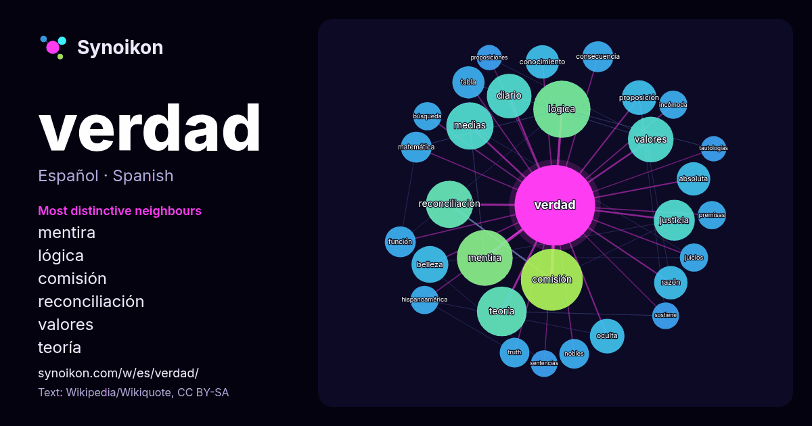

Español · palabra popular
verdad
“truth” · Las palabras encontradas a su alrededor en 1305 apariciones de Wikipedia, Wikiquote.

Vecinos más característicos
- mentira 39×
- lógica 38×
- comisión 33×
- reconciliación 28×
- valores 22×
- teoría 21×
- diario 19×
- justicia 16×
- belleza 16×
- proposición 16×
- oculta 15×
- medias 15×
- absoluta 13×
- truth 12×
- conocimiento 12×
- razón 12×
- matemática 11×
- incómoda 11×
- nobles 11×
- tabla 11×
× = cuántas veces más que en el texto general de Wikipedia.
Vecinos más frecuentes
- comisión 48
- lógica 41
- mentira 39
- teoría 31
- medias 28
- reconciliación 28
- valores 26
- diario 25
- justicia 21
- película 20
- belleza 17
- serie 17
- forma 15
- hombre 15
- mundo 15
- oculta 15
- proposición 15
- absoluta 14
- conocimiento 14
- razón 14
En contexto
- La verdad (o veridicidad) se entiende, tanto en filosofía como en el uso ordinario, como la propiedad por la cual ciertos contenidos —las llamadas unidades Wikipedia snippets · Verdad
- de verdad, o tabla de valores de verdades, es una tabla que muestra el valor de verdad de una proposición compuesta, para cada combinación de verdad que Wikipedia snippets · Tabla de verdad
- La Verdad es un periódico regional español radicado en la ciudad de Murcia. Su primer número apareció el 1 de marzo de 1903, pasó a formar parte del Grupo Wikipedia snippets · La Verdad (España)
- La verdad o La Verdad pueden referirse a: La verdad (novela) (2000), novela escrita por Terry Pratchett, perteneciente a la saga Mundodisco. La Vérité Wikipedia snippets · La verdad
- palabra «verdad» con otras de sentido más práctico, como Verdad o desafío, Verdad o consecuencia, Verdad o atrevimiento (en España y Colombia), Verdad o castigo Wikipedia snippets · Verdad o reto
- La Comisión de la Verdad y Reconciliación (CVR) de Perú fue una comisión de la verdad oficial del Estado Peruano destinada a investigar el periodo de Wikipedia snippets · Comisión de la Verdad y Reconciliación
- Una comisión de la verdad o comisión de la verdad y la reconciliación es una comisión encargada de descubrir y revelar las malas acciones del pasado por Wikipedia snippets · Comisión de la verdad
- Una verdad lógica o verdad matemática es una fórmula bien formada de un lenguaje formal que es verdadera bajo todas las interpretaciones de los componentes Wikipedia snippets · Verdad lógica
Más palabras
- agua
- arte
- bosque
- caballo
- camino
- campana
- canción
- ciencia
- ciudad
- clima
- comida
- corazón
- desierto
- dinero
- dios
- espejo
- estrella
- familia
- fuerza
- gato
- historia
- invierno
- isla
- jardín
- lengua
- lluvia
- madre
- mapa
- miel
- montaña
- muerte
- naturaleza
- oro
- otoño
- pan
- perro
- puente
- reloj
- sal
- salud
- silencio
- sombra
- tiempo
- tormenta
- trabajo
- tren
- té
- verano
- vida
Precalculado el 2026-10-09 con los ajustes predeterminados (±5 palabras, corpus mediano). El mapa interactivo puede actualizarlo con datos en vivo.
Interfaz traducida automáticamente; se agradecen correcciones.